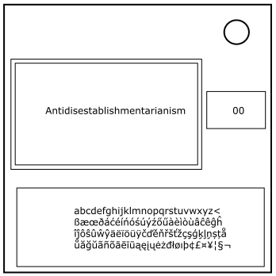

Keep Talking and Nobody Explodes Mod
書き取り

モジュール詳細：書き取り
黒水晶のスフィンクスよ、我が誓いを裁け。
「begin」というラベルの付いたボタンを押すと、最大99語を含むメインディスプレーのフレーズが順番に表示されはじめる。
フレーズの表示が完了すると、右側の小さなディスプレーに数字が表示される。
フレーズ内での位置が指定された数字と一致する単語を入力する。<キーを使用して入力を削除、エンターキーを使用して送信する。
もう一度エンターキーを押すと同じフレーズのサイクルが再び繰り返される。